Siempre pasa por aquí a la misma hora.
Texto del pie de foto.
Siempre pasa por aquí a la misma hora.
soy solamente un perdedor
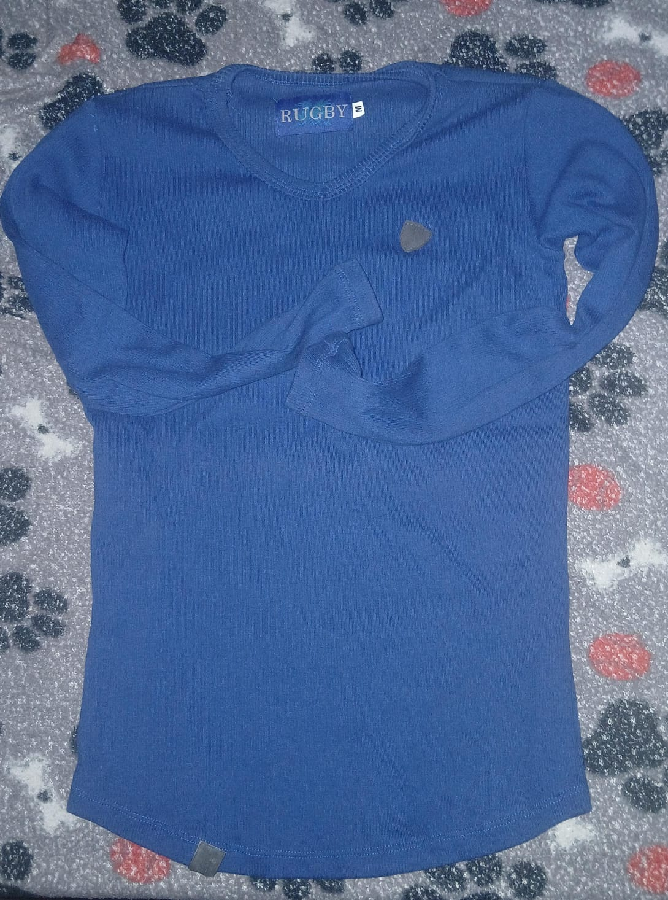
azul profundo como las olas del mar o la inmensidad de la irregularidad de no saber como esta prenda esta aca
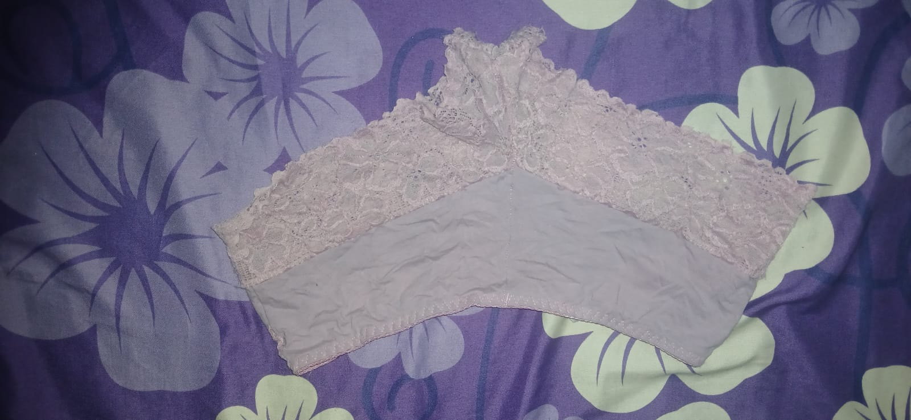
una noche empezo pero es aquello que se te perdio?
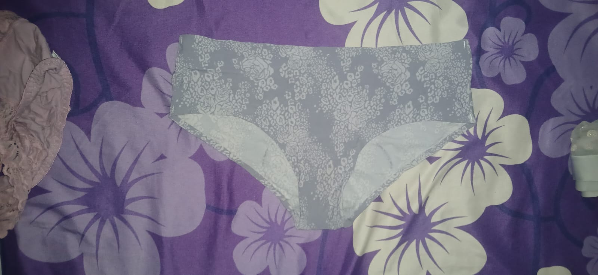
son varios guardados me pregunto si se notara su ausencia
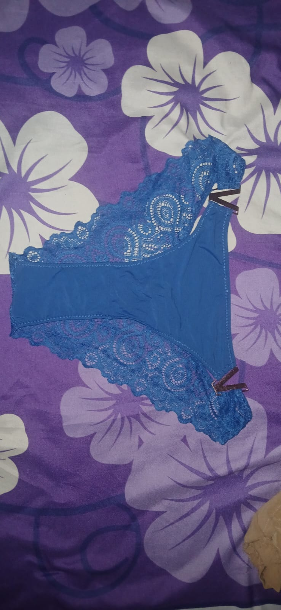
mas y mas nose donde los habre encontrado ya
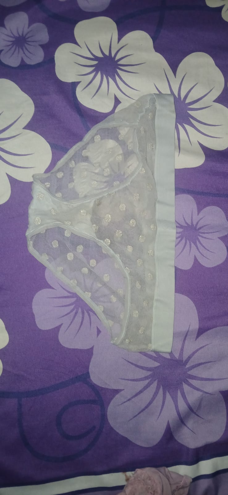
todos tiene una decoracion me imagino que los tienes puestos y seguramente se te ven hermosos
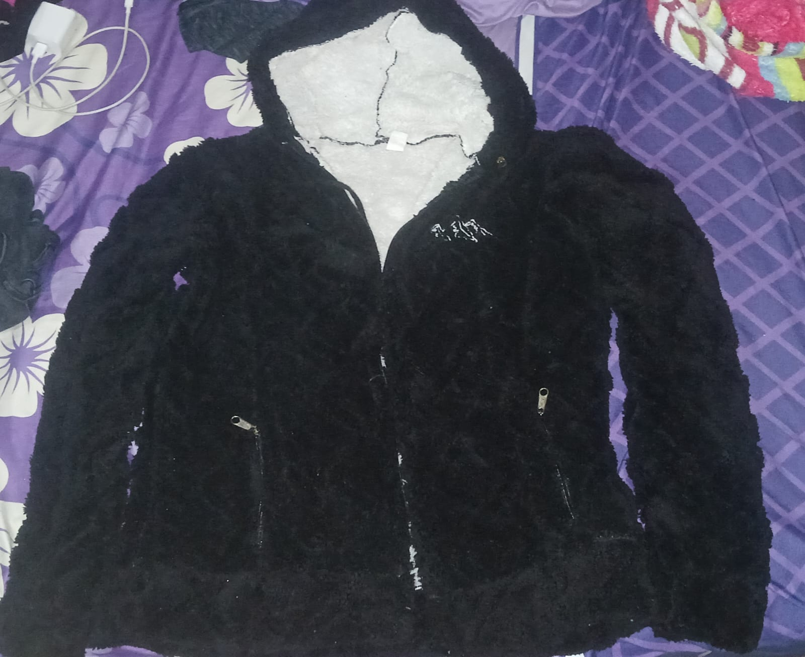
El frio afuera sin esto se debe sentir feo lo mejor seria tener una
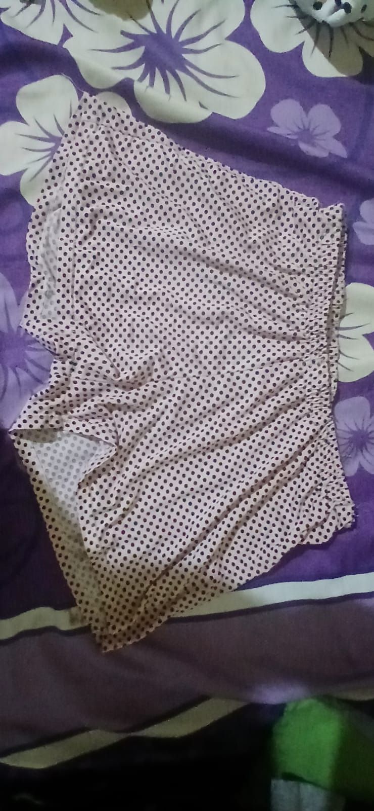
oh son puntitos y muy bonito
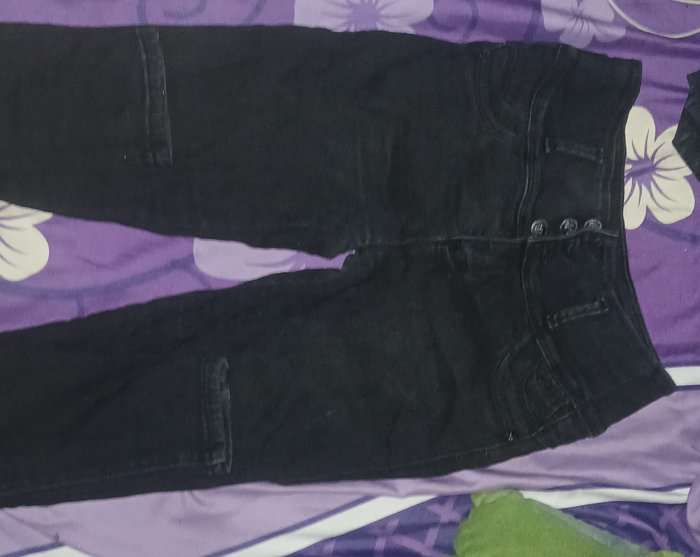
Yo tenia un pantalon negro pero era de diferente marca y estilo a este
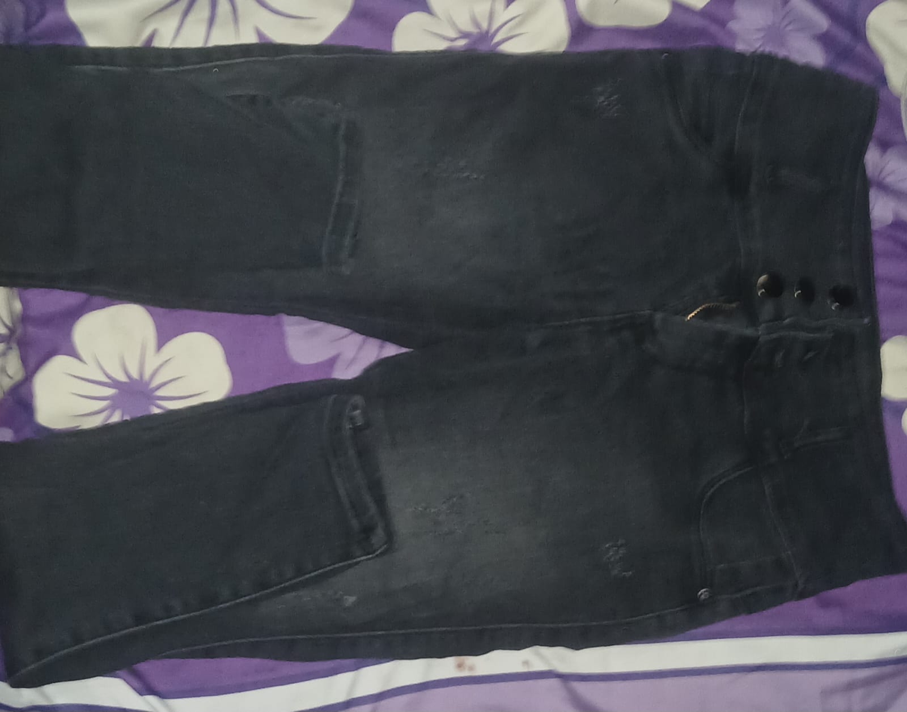
Son dos de color negro no vayas a creer que tome dos fotos al mismo
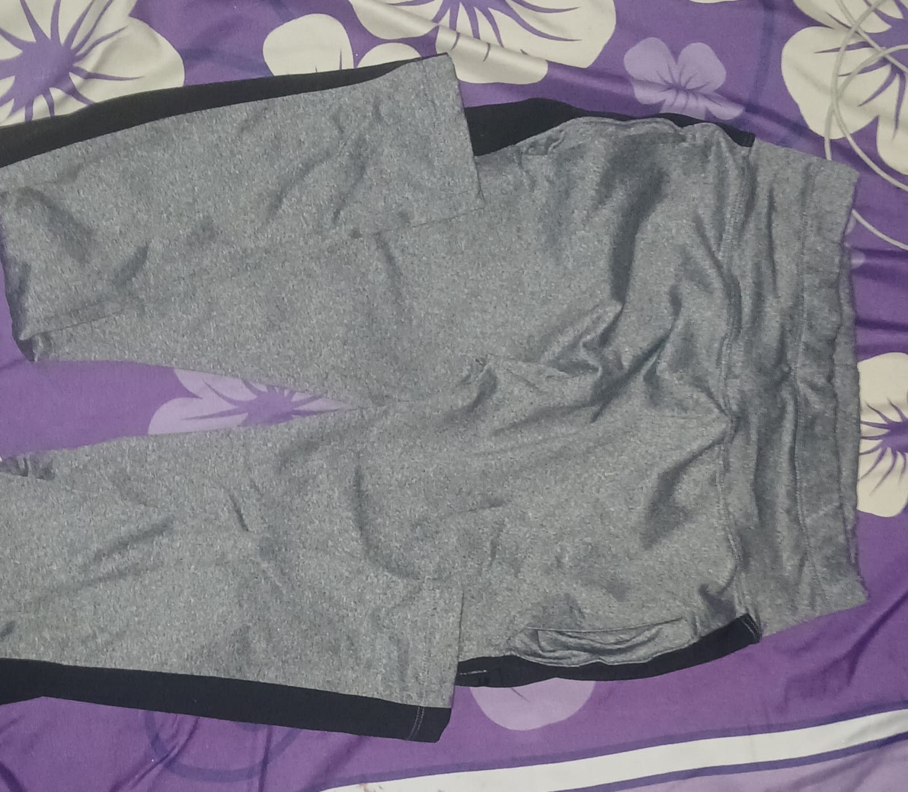
creo que este fue el primero que me lleve
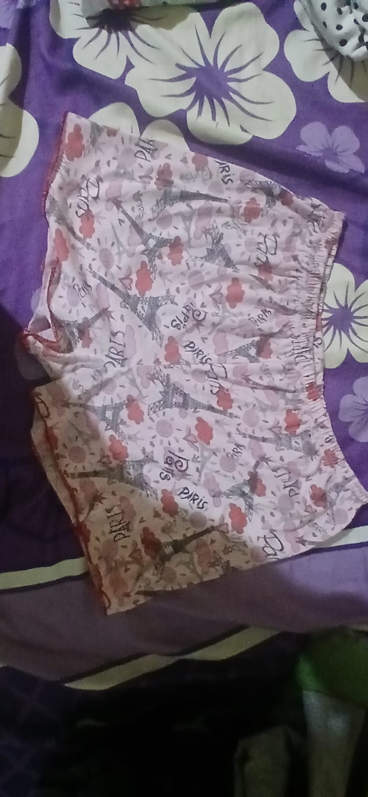
a pesar de estar paris estampado me pregunto como esta ese lugar hoy
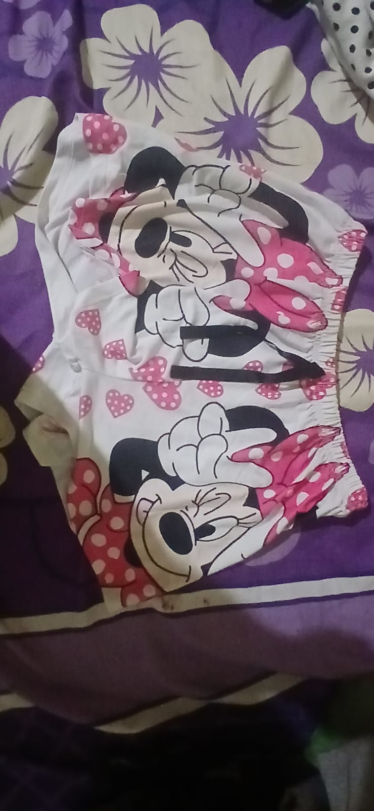
falta el miky mouse de la mini mouse